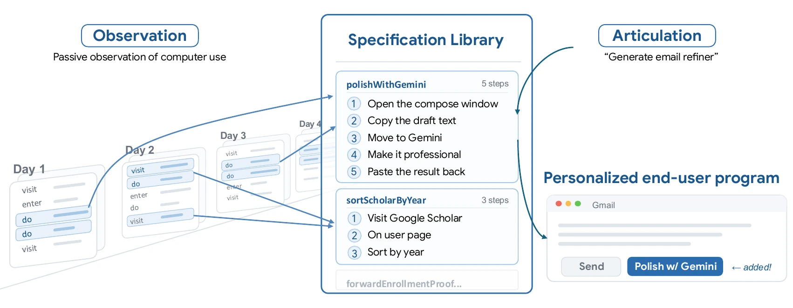
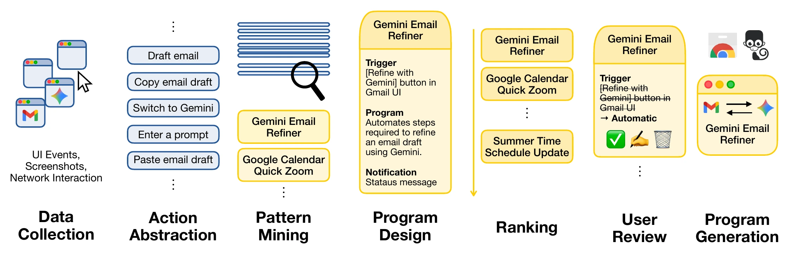
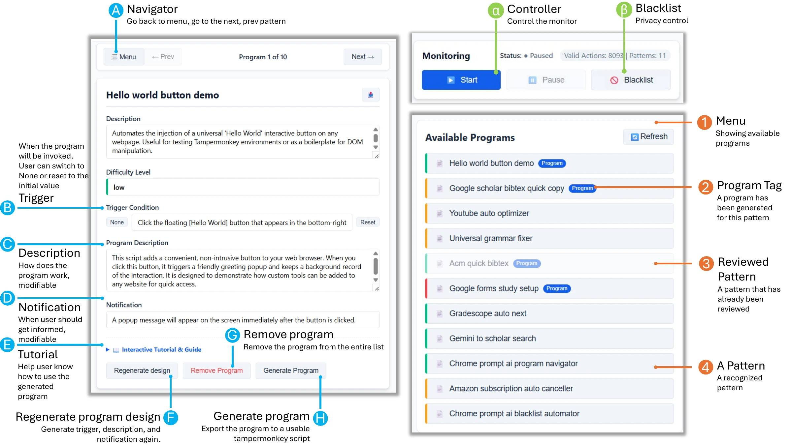

Abstract
People can use AI to write programs, but they still need to know what to automate and explain how it should work. Motif starts with what people already do: it observes everyday browsing, discovers recurring routines, and lets users review and refine them before generating programs. In a controlled study of 100 patterns, adding behavioral evidence doubled the number of working programs from 21 to 42. A multi-day deployment with eight participants surfaced useful automation opportunities they had overlooked. These findings suggest that observed behavior can complement what users express in words.
Behavior-Grounded Specification
Everyday activity becomes a library of recurring routines, each backed by observed actions and variations. Users select and refine a routine to specify what their program should do.

Video
A walkthrough of Motif, from discovering browser routines to reviewing and generating programs. Watch on YouTube.
Pipeline

Motif captures browser interactions and suggest potential programs. Users can then revise and deploy a Tampermonkey program.
Interface

Results
Study 1: Behavioral Specification improves program performance
We evaluated 200 programs across 100 patterns constructed from WebLINX1. Each pattern was generated under two conditions: a task description alone, or the same description supplemented with observed actions. Researchers assessed functionality and fidelity to the described goal.
| Condition | Functionality | Pattern Fidelity | |||
|---|---|---|---|---|---|
| Working | Not Working | Goal-only | Invented | Missing | |
| Behavior-grounded | 42 | 58 | 85 | 6 | 9 |
| Description-only | 21 | 79 | 66 | 16 | 18 |
Behavioral evidence doubled the number of working programs and reduced invented functionality. Goal-only programs stayed within the described goal, although they did not necessarily execute successfully.
Study 2: Real-World Deployment
Eight participants used Motif during multiple days of browsing, then selected, reviewed, and tested five programs each.
Motif surfaced personalized administrative workflows, including renewing multiple Facebook Marketplace listings in one action, finding and forwarding enrollment-proof emails to an employer, and batch-filling timesheet entries for non-service days.
“I found that the pattern identification in motif is very useful, because it’s very subtle, so I didn’t realize it, but if I can have a program to help me do that, I feel it’s very useful.”— P4
Citation
Cite us!
@misc{jiang2026motifdiscoveringautomatingpersonal,
title={Motif: Discovering and Automating Personal Web Workflows},
author={Shaokang Jiang and Daye Nam},
year={2026},
eprint={2607.10531},
archivePrefix={arXiv},
primaryClass={cs.HC},
url={https://arxiv.org/abs/2607.10531},
}